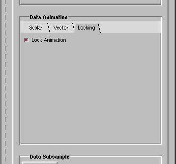

Contents
Sections
Section 1–Introduction
FusionViewer is a SCIRun PowerApp that is designed to allow scientists to quickly and easily visualize 3D scalar and vector magnetic fusion data. Scalar data such as pressure or temperature may be viewed a series of iso-surfaces and/or as a series of slices. Vector data such as the magnetic field can be interactively explored using a 3D widget to produce 3D fieldlines. The data can either be viewed as a single time slice or stepped through when multiple time slices are provided. In addition to viewing, data may be probed to look at the values at specific locations.
FusionViewer can read data that has been stored as either a local HDF5 file or in MDSplus. The data may be either structured volume elements such as Hexahedrons or unstructured Prisms.
-
Data Requirements:
Structured Grid
- Points
- Scalar Field and/or Vector Field
Unstructured Grid
- Points
- Connections
- Scalar Field and/or Vector Field
No data set preparations are needed to run this tutorial. Sample HDF5 data is part of the SCIRun Fusion sample data set collection and can be downloaded from SCI's web site.
Section 2–Getting Started
This section demonstrates how to start FusionViewer. Subsequent sections demonstrate how to load and visualize data.
2.1 Preparations
When running FusionViewer on Apple's OSX operating system, the limit on the number of open files must be increased.
For csh-like shells type:
limit descriptors unlimited
For sh-like shells type:
ulimit -n unlimited
2.2 Launching FusionViewer
Change the working directory (using the cd command) to the directory containing the FusionViewer executable. This directory will be /usr/local/SCIRun/bin/ if SCIRun has been installed via RPM. Then type ./FusionViewer to start FusionViewer:
cd /usr/local/SCIRun/bin ./FusionViewer
FusionViewer takes a few moments to start up, then displays the window shown in Figure 1. The FusionViewer command accepts one optional argument, which is the name of a session file:
./FusionViewer mysession.ses
where mysession.ses has been previously created by FusionViewer. See below for information on sessions.

Figure 1: FusionViewer Interface Window (Initial State).
2.3 User Interface Organization
The FusionViewer window contains two panes: the Rendering Pane and the Visualization Pane. The Rendering Pane is on the left side of the window. All data interaction and visualization is performed in the Rendering Pane. The Visualization Pane is on the right side of the window. The Visualization Pane guides the user through the application and controls visualization parameters for the Rendering window. The panes may be detached from one another by clicking on the pane detachment/attachment controls—these are the vertical dashed lines separating the panes. When separated, the panes appear as displayed in Figure 2. Detaching the Rendering window allows it to be viewed at maximum resolution. Panes are re-attached by clicking on the pane detachment/attachment controls.

Figure 2: FusionViewer Interface Window (Detached State)
The Rendering window contains two top-level menus: File and Help. The File menu, displayed in Figure 3 contains the following items:
- Load Session...
- Loads a previously saved session.
- Save Session...
- Saves a session, which can be resumed later.
- Save Session As...
- Saves a session under a new name.
- Save Image...
- Saves the content of the Rendering pane as an image.
- Quit
- Quits FusionViewer.
The user is not required to complete all processing steps before exiting FusionViewer. A FusionViewer session can be stopped and resumed using File menu items Save Session... (or Save Session As...) and Load Session..., respectively. After loading a saved session with Load Session..., resume processing and visualization by clicking Execute.

Figure 3: File Menu.
The Help menu, shown in Figure 4, contains these items:
- Show Tooltips
- A checkbox that toggles tooltips on and off.
- Help Contents
- Provides help on the FusionViewer application.
- About FusionViewer
- Provides information about FusionViewer.

Figure 4: Help Menu.
A Progress Indicator and an Execute button are found at the bottom of the Visualization Pane. The Execute button starts the current processing step. The Execute button is pressed after parameters for the current processing step have been set. The Progress Indicator and the text above show information about the current state of processing and suggest the next processing step. It can also indicate when modules are dynamically compiling or when they are in an execution state.
Section 3–Interaction with the Rendering Window
Interaction with the Rendering window is performed with the mouse. The Rendering window's scene can be translated, zoomed, rotated, etc. Table 1 shows all mouse actions. See also 6.3 of User's Guide (Mouse Control in the Viewer Window) for more information.
| Modifier Key | Mouse Button | Renderer Window Action | |
|---|---|---|---|
| Scene Controls |
none | Left | Translate scene |
| Middle | Rotate scene | ||
| Right | Zoom scene | ||
| Control | Left | Translate scene in Z-direction | |
| Middle | Rotate the camera view about the eye point | ||
| Right | Unicam movement | ||
| Rake Widget Controls |
Shift | Left | Position and orient rake widget |
| Middle | Toggle widget's modes | ||
| Right | Display widget help window |
Section 4–Visualization
4.1 Data Selection Tab
Figure 5 displays the Visualization Pane's Data Selection Tab. The Data Selection Tab provides controls for loading data from either HDF5 or MDSplus, for animating the data, and for subsampling the data.

Figure 5: Data Selection Tab
4.1.1 Data Source
Figure 6 displays the Visualization Pane's Data Source Pane for loading a particular data set. Data may be loaded from either HDF5 or MDSplus. Figure 7 displays the Visualization Pane's Data Source Pane for loading HDF5 data. Figure 8 displays a similar pane for loading MDSplus data. Data may be loaded from either HDF5 or MDSplus. Although the data may all be contained in one file the data must be loaded (specified) as either points, connections, scalar or vector. in addition, there can only be one set of each. The required data is outlined in Section 1. See also DataIO Module Descriptions of Module Reference Guide for more information.

Figure 6: Data Source Pane

Figure 7: HDF5 Data Source Pane

Figure 8: MDSplus Data Source Pane
4.1.2 Data Animation
Figure 9 displays the Visualization Pane's Data Animation VCR Pane for loading a particular data slice. Data may be loaded as either a single frame or as a series of animation frames. There are two animators, one for the scalar and the vector data respectively. This allows different time sliced to be viewed at one time. Or more commonly, they will be locked in the Data Animation Locking tab as shown in Figure 10 . For more on the VCR controls see Chapter ? of the SCIRun User's Guide.
 Figure 9: Data Animation Pane |
 Figure 10: Data Animation Locking Tab |
4.2 Vis Options Tab
Figure 11 displays the Visualization Pane's Vis Options tab. Controls in the Vis Options tab allow selection of visualization type, visualization parameters, and colormap. Visualizations can be viewed individually or together. For example, Figure 12 displays visualization of streamlines and iso-surfaces.
There are individual tabs for visualizing the scalar and vector data as well as for the probes and colormaps (under the Misc. tab). There usage is demonstrated in the following sections.

Figure 11: Vis Options Scalar Tab

{kind=link}
4.2.1 Scalar Data Visualization
Figure 13 displays the Vis Option's Scalar Pane. Scalar data may be visualized as either a one or more slices in the either the phi or z directions. Further these slices may be in the form of either a face or as one or more isocontours. In addition to faces, data may be visualized as one or more isosurfaces.

Figure 13: Scalar Data Visualization Pane
4.2.1.1 Slice Visualization
A scalar slice surface is a surface of constant phi or z value. Figure 14 displays a slice at phi = 0 degrees. To produce the visualization in Figure 14 select the checkbox labeled "Show Scalar Slice Contours" (from the Vis Options Scalar tab), select the checkbox labeled "Slice Direction: Phi" and select the "Slider" tab, move the value slider to 0, and select the "Show Scalar Slices as Faces". To produce a one or more contours unselect the "Show Scalar Slices as Faces", select "Contours", "Slider" tab and move the value slider to 4. This porduce a slice with four contours.

Figure 14: Scalar Slice Visualization.
4.2.1.2 Isosurface Visualization
An iso-surface is a surface of constant value. Figure 15 displays an iso-temperature surface. To produce the visualization in Figure 15 select the checkbox labeled "Show Isosurface" (from the Vis Options Scalar tab), select the "Slider" tab, and move the value slider to 0.

Figure 15: Isosurface Visualization.
4.2.2 Vector Data Visualization
Figure 16 displays the Vis Option's Vector Pane. Vector data may be visualized as a one or more fieldlines. In addition, the fieldline integration steps maybe shown. Both the fieldlines and integration steps may be color using several techniques.
{kind=link}
Figure 16: Vector Data Visualization Pane.
4.2.2.1 Fieldlines Visualization
Fieldlines are traces of paths taken by the magnetic field. The rake widget is used to establish (or seed) the initial positions within the magnetic field.Figure 17 shows fieldlines visualization.
Fieldlines visualization is controlled with the rake widget and settings in the Vis Options tab.
The rake widget's position determine fieldline paths. The mouse is used to translate, rotate, and resize the rake widget. In each case, the Shift key and left mouse button are pressed while dragging a component of the rake. Drag the rake's blue bar to translate the rake, drag a rake's blue spheres to rotate the rake, and drag the rake's green ends to resize the rake. Fieldlines are redrawn after the "Execute" button is pressed.
The slider bar labeled "Field Lines" selects the number of seed points along the rake widget. Seed points are evenly spaced along the rake.
Fieldlines are computed using a fast or an adaptive algorithm. Select an algorithm using the radio buttons labeled Fast Tracking or Adaptive Tracking. The fast method walks a mesh directly. The fast method's accuracy is determined by a model's accuracy. The adaptive (slower) method interpolates between cells in a model. The adaptive method walks over discontinuities, producing a smoother fieldline appearance.

Figure 17: Fieldlines Visualization.
4.2.3 Probes
Figure 18 displays the Vis Option's Probe Pane. By checking the "Show Probe" in either the Scalar or Vector Pane will display a GUI probe that may be used probe the location and value of the data as well as mesh information. The probe may be placed at specific locations by entering the location values.

Figure 18: Probe Visualization Pane.
4.2.4 Misc.
Figure 19 displays the Vis Option's Misc Pane. This pane controls the colormaps used and syncronizes the display.

Figure 19: Misc. Visualization Pane.
4.2.4.1 Colormap Selection
Scalar and vector magnitude values are color coded using a colormap. Six colormaps are available (Figure 20). A colormap is selected from the Vis Option Misc tab. Figure 21 displays the isotemperature surfaces colored with the Balckbody colormap selected rather than the default Rainbow coloring. There are colr maps for scalar and vector data. The misc color map is used to color the integration steps.
In addition, it is also possible to set the usable color map range. See Chapter 2.7 of the SCIRun User's Guide, which is a complete reference to Colormaps.

Figure 20: ColorMaps.

Figure 21: Visualization with the Blackbody colormap selected.
4.2.4.2 Syncronize
Depending on complexity of the data when geometry such as the isosurfaces are generated they may complete before other geometery such as the fieldlines. Normally, the view is updates on a first generated first viewed basis. This may or may not desired. By checking the "Enforce" syncronization the viewer will up date only when all of the geometry has been generated.
4.3 Viewer Options Tab
Figure 22 displays the Visualization Pane's Viewer Options tab. The Viewer Options tab provides controls for changing the properties of the Rendering Window. Hovering the mouse pointer over a control (e.g., Views pop-up menu button) displays a tooltip describing a control.

Figure 22: Viewer Options Tab